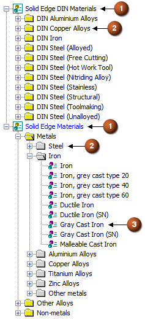

Material Table
The Solid Edge Material Table supports multiple material libraries. You can import and export materials, edit materials, and add custom properties to existing materials.
You apply a material to a part to define the material and mechanical properties. These properties are used when you calculate the physical properties for a part or assembly, place the part in an assembly, render the assembly with advanced rendering, create a parts list on a drawing, or define a bill of materials.

You use the Material Table dialog box to select and manage materials. The Material Table dialog box is available in part and sheet metal documents. When working with a sheet metal part, you also can use the dialog box to define the properties for the sheet metal stock you are using, such as material thickness, bend radius, relief values, and bend equations.
You can open the Material Table dialog box using the File menu→Info→Material Table command.
Material library files
The material names and property sets are stored in an external file which has a .mtl extension. The material file location is defined in the Material Table dialog box. The material library file populates the property set for each material in the Material Table dialog box. You can use the dialog box to create new materials and edit the values for an existing material. In a managed environment, the material file can be placed in a common folder where an entire design group can share a common definition.
Library navigation
You navigate through material libraries by using the left panel in the Material Table dialog box. The nodes in the folder tree are (1) library, (2) directory, and (3) material.

You can right-click a library, directory, or material to find a list of commands for managing materials.
Mapping a material property for synchronization with Teamcenter
By using mapping definition files, Solid Edge material properties (such as density, mass, and volume) can be stored in the Teamcenter database and displayed and modified in both Solid Edge and Teamcenter. This synchronization allows an attribute in one application to be updated automatically when a modification is made to the corresponding attribute in another application. Refer to the Teamcenter Integration for Solid Edge (SEEC) Guide for Users and Administrators, for attribute mapping syntax and examples.
How do I
Apply a material to a partAdd a favorite material
Create a new material
Create a custom material property
Change the location of the material folder
Change the Material Table units
Learn more
Material PathFinder nodeManaging material libraries
Copying and pasting materials
Importing and exporting materials
Look up more details
Material Table commandMaterial library property file
Sheet metal gages file
Material Table dialog box
Material Properties tab
Gage Properties tab
Favorites and Recent Materials tab